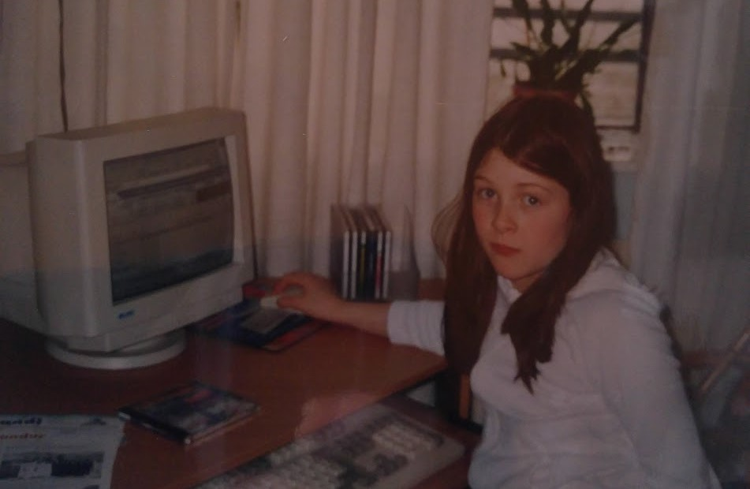

Sigrún Tinna
Computer Scientist, Programmer, Designer.
Read my Resume
This Is Me


About
My name is Sigrún Tinna, a soon to gratuate in 2018 as a Computer Scientist (B.Sc.). I‘m easy to get along with and I enjoy working with people. I have a natural ability to identify problems and brainstorm solutions. I am a quick lea rner and find it easy to adapt my knowledge base.